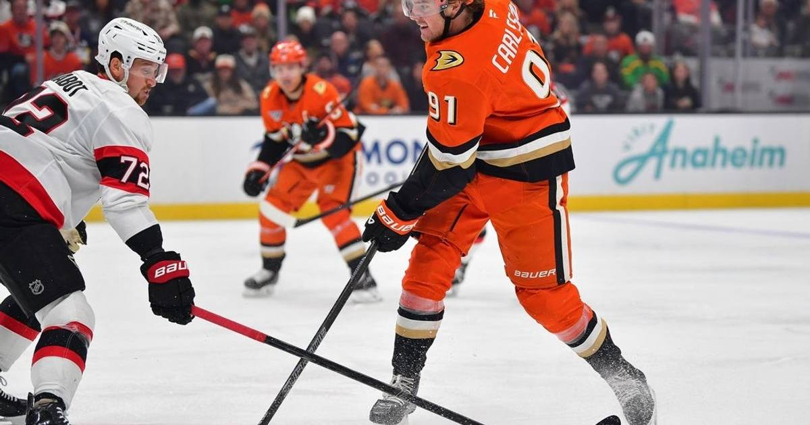

Cutter Gauthier Scores Twice in 36 Seconds to Complete a Hat Trick and Cap the Ducks' Comeback Over Ottawa
Down 3-0 after one period, the Ducks scored six unanswered goals to beat Ottawa 6-3, with Cutter Gauthier's second career hat trick doing the damage.

The Anaheim Ducks were dead. Down 3-0 after one period, having lost seven of eight, they looked finished against Ottawa on Sunday night. Then Cutter Gauthier happened, and the Ducks scored six unanswered goals to win 6-3 at Honda Center.
Gauthier's second career hat trick did the damage, and the last two goals came 36 seconds apart.
The hole
Ottawa scored on three of its first seven shots. Philip Tomasino tipped one home at 6:00 of the first, Claude Giroux scored off a rush at 7:02, and Michael Amadio finished a breakaway at 17:37. It was 3-0 Senators after 20 minutes, and Anaheim's night looked over.
It was not. Gauthier took advantage of a turnover in the Ottawa zone and scored from in close at 1:35 of the second to make it 3-1. Judd Caulfield, who had been on hat-trick watch himself earlier in the night, cut it to 3-2 at 3:33, banging home a rebound on the doorstep. Then, after the Ducks killed three penalties, including a 19-second five-on-three, Caulfield tipped Tristan Luneau's point shot home with 42 seconds left in the period, on a power play with three seconds left on it, and the game was tied 3-3.
Thirty-six seconds
The third period belonged to Gauthier. On a five-on-three power play, he one-timed one from below the right circle, short side, at 1:50 to give Anaheim its first lead, 4-3. On the ensuing five-on-four, from nearly the same spot, he scored again at 2:26. Two goals, 36 seconds apart, hat trick complete, 5-3 Ducks.
Roger McQueen added the Ducks' fourth power-play goal of the night at 15:19 to make it 6-3, and that was that. Six unanswered goals, four of them on the power play, and a comeback win for a team that badly needed one.
The numbers behind it
Gauthier finished with three goals on five shots in 19:02 of ice time. Caulfield finished with two goals and an assist, falling one short of the hat trick himself, and Leo Carlsson had three assists, with Luneau adding two. Laurent Brossoit, recalled from San Diego of the AHL on Saturday and making his first start for Anaheim in his second NHL game in two and a half years, made 19 saves for the win. Jonas Johansson stopped 27 for Ottawa.
The win moves Anaheim to 6-7-1, its second victory in nine games. Ottawa falls to 9-6-1, losers of three of four on its trip. The Senators led 3-0 after one period and never scored again. The Ducks, down three goals and sinking, scored six straight and walked off with the kind of win that can turn a season around.
Sources
• ESPN box score, Senators at Ducks, November 1, 2026 (event 401892628)
• NHL.com game recap, November 1, 2026
• Associated Press game report, November 1, 2026
• Deadspin / Field Level Media game report, November 1, 2026
Gear up: Fanatics